【2024郑州机床展】汇聚产业力量，优质展商合集推荐，聚焦您想要的明星产品！
首页 / 【2024郑州机床展】汇聚产业力量，优质展商合集推荐，聚焦您想要的明星产品！
2024郑州机床展
2023年，我国机床行业持续稳定发展，产值和销售额均呈现出稳步增长的态势。尽管在全球经济形势不确定性的影响下，我国机床行业仍然展现出较强的韧性和发展潜力。此外新能源汽车、电子信息、现代医疗、先进装备、风电等新兴行业的发展壮大，将持续带动机床的新增需求。
第20届郑州机床展将于2024年5月9-12日在郑州国际会展中心隆重启幕！作为中西部工业品牌大展，是中西部地区极具影响力、号召力的行业平台。致力于中西部制造业的发展。历经二十年深厚积淀，站在新起点上，以行业高度责任感持续打造高品质高成效的平台。
2024郑州机床展以20周年为契机，将汇聚产业力量，与众多展商共同为中部制造业转型升级助力，赋能行业发展。马扎克、沈阳机床、日本三菱、苏州三光、山东威达、鹏睿智能、捷程数控、安徽新诺、厦门扬森、台湾大畏、东部数控、南京新浙等国内外龙头品牌供应商将继续支持展会，基本都已确定大面积参展，其中不乏有企业大幅度提升参展面积。现场将高调亮相，展示先进的生产解决方案，行业新品、爆品，共绘行业发展新未来。

马扎克—河南佳之锐
马扎克进入河南市场是在2000年开始，目前河南市场保有量2000多台的市场占有率，在同行业中应该处于前几名的情况。
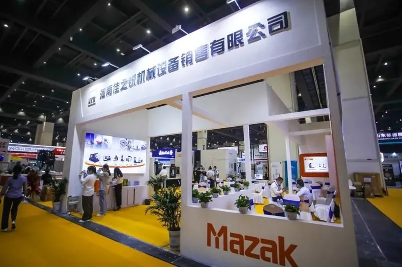
河南佳之锐机械设备销售有限公司位于郑州市金水区，注册资金500万人民币，是一家专业经营销售国内外知名品牌机械设备的公司，专注于机械设备顾问式咨询与服务，为客户提供全方位设备管理系统解决方案。公司始终本着“以德立企，质量为本，诚信经营，长期服务”的宗旨，着眼于市场需求，求真务实，勤恳守信，赢得了业界顾客的一致好评！
公司专业经营机床设备、机械设备及配件，从事货物和技术的进出口等多项业务范畴，服务网络覆盖全国大部分地区，在汽车、航空航天、船舶、重工等领域有着广泛、稳定的客户群体，我们将以最热忱的服务，最精湛的技术，为客户提供更合理、更流畅、更经济的制造工艺设备。始终秉承为用户提供机械设备整体解决方案的经营理念，以感恩的姿态回报社会，勤拼搏，勇开拓，助推机械设备行业和社会经济快速发展！ 真诚期待与您的合作！
通用技术沈阳机床
沈阳机床股份有限公司成立于1993年5月，由原沈阳第一机床厂、中捷友谊厂、沈阳第三机床厂共同发起成立。公司一直是国家重点建设和发展的机床骨干企业，于1996年在深交所上市（股票代码000410),是中国机床行业早期上市公司之一。新中国第一枚金属国徽，第一台车床、钻床、镗床、国产数控机床及搭载15数控系统的智能机床都诞生在这里。
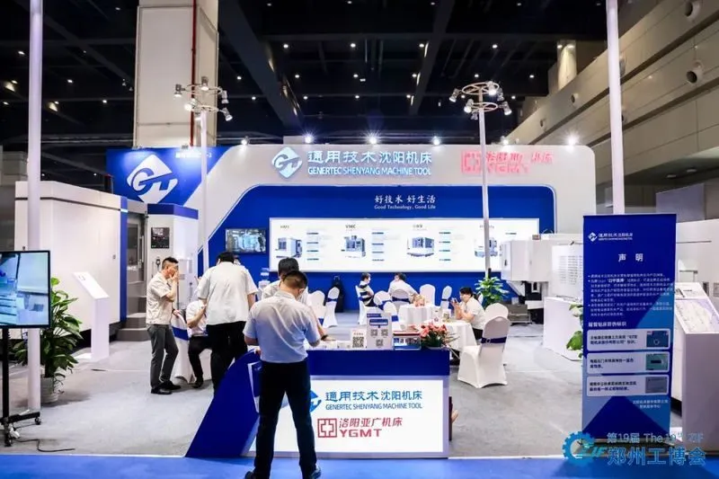
洛阳亚广机床有限公司始建于一九九三年，从默默无闻到脱颖而出，从白手起家到业界翘楚，洛阳亚广机床有限公司的成长可谓一路艰辛一路收获。经过二十余年的精心发展，始终坚持：以“市场求生存、管理出效益、创新谋发展、服务创品牌”的方针，秉承“产业多元化、经营国际化、管理科学化”的发展理念，大力推进“管理铸基、营销筑阵、品牌筑根”的企业构想，全力打造“亚广”品牌。
目前，公司立足机床市场，以主机业务为主，附件、备品件、刀具为辅；未来，业务范围将涉及机床产品销售、机床产品金融服务、机加工技术服务、机床售后服务、数控技术培训、机床零配件生产及销售、机床再制造等诸多领域，能够为机加工企业提供整体解决方案和机床再制造技术。
日本三菱
作为全球自动化领域的领导厂商，三菱电机自动化（中国）有限公司负责三菱电机工业自动化(FA)事业在中国的业务，致力于为中国客户降低成本、节能增效。自六十年代进入中国以来，三菱电机的自动化产品已广泛应用于汽车、纺织、包装印刷、食品饮料、电子半导体、机床、新能源等领域；同时也为楼宇、电力、水处理、轨道交通等社会基础设施建设提供有力支持。
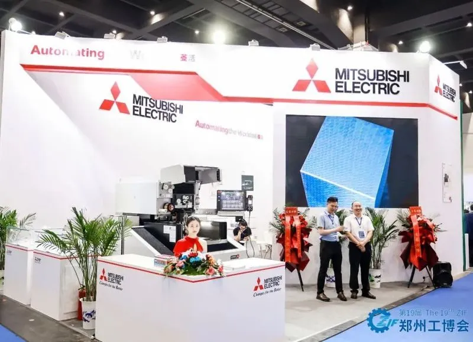
三菱电机自动化拥有贯通制造全层级和覆盖制造全链条的FA产品群，包括：可编程控制器，人机界面、变频器、交流伺服系统、工业机器人等实现工厂自动化的控制和驱动设备，放电加工机、激光加工机、打孔机等高速和高精度加工的机电一体化产品和CNC数控系统，助力能效管理的电磁开关、能源监测等配电控制产品。
在工业和制造业领域，三菱电机基于百年制造经验积累和完整的自动化产品体系，形成涵盖制造全周期的e-F@ctory智能制造解决方案，融合FA-IT技术将生产现场与信息系统无缝连接，真正实现“人、机器与IT协同”的智能制造，不断导入IIoT工业物联网技术、边缘计算技术、AI人工智能技术、TSN时间同步技术等先进科技，通过感知理解、分析预测、决策优化等应用，构建可视化、可分析、可改善的制造系统，削减工程链、供应链的综合成本，帮助客户实现制造经营优化，进一步提升核心竞争力，实现面向未来的先进制造。
苏州三光
苏州三光科技股份有限公司是一家集研发、制造、生产、销售、服务为一体的高新企业，是生产数控电加工机床的企业。公司位于风光秀丽的苏州国家高新技术产业开发区，总部坐落在苏州新区。
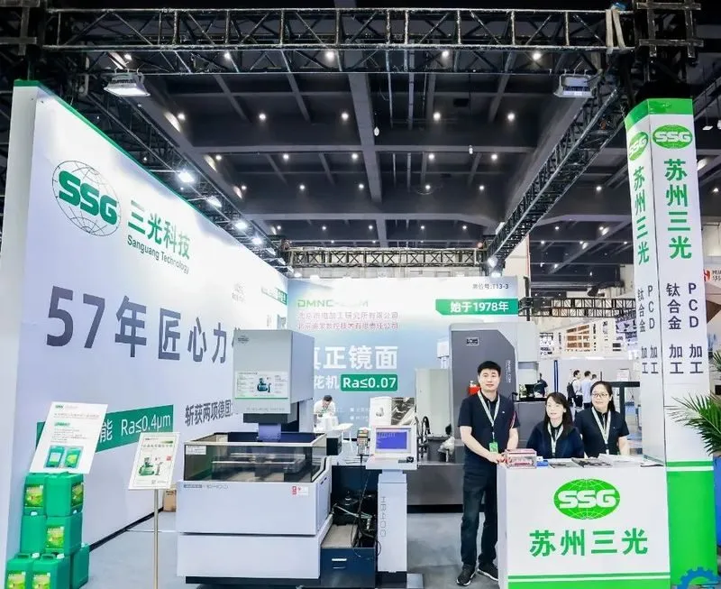
公司的主要产品“三光牌”低速走丝电火花数控切割机、同服数控中走丝线切割机、高速走丝电火花数控切割机、电火花成形机及电火花高速穿孔机等。凭借“三光牌”的品牌，在设计和制造中融入了主流机床的特点，依靠稳定的质量、可靠的性能、人性化的操作方式，深受各方用户的青睐，产品除了在国内拥有稳定的市场，还远销美国、德国、土耳其、瑞典、日本、韩国、澳大利亚、波兰、墨西哥、沙特、伊朗、巴西、南非、哥伦比亚、马来西亚、泰国、印度、越南等十几个国家和地区。
山东威达
山东威达重工股份有限公司系股份制企业，是鲁南地区机床大型制造企业，枣庄市龙头骨干企业，拥有自营进出口权，下设铸造公司、金公司等，公司位于风景秀丽的墨子故乡、中小机床之都一山东省滕州市，公司先后与山东建筑大学成立产学研合作实践基地、大学生实习基地，与北京发那科(FANUC)机电有限公司共同合作成立的“人才创新实践基地”公司设有技术研发中心、信息数据处理中心、产品监督检测中心及计量室，新产品开发和企业信息化管理采用CAD和ERP管理系统。
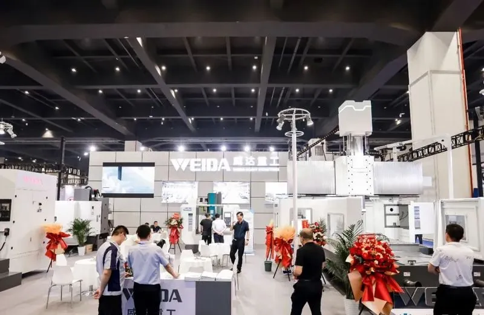
近年来，通过吸收国内外先进技术，与科研院校合作与自行开发设计相结合，主导产品已形成：龙门加工中心系列、立式加工中心系列、卧式加工中心系列、五轴加工中心系列、数控铣床系列、卧式锋铣床系列、摇臂钻床系列、万能升降台铣床系列、立式铣床系列、铣钻床系列等几十余种规格产品，产品性能稳定，深受客户认可，产品销往全国31个省市以及欧、美、亚等多个国家和地区。
安徽鹏睿
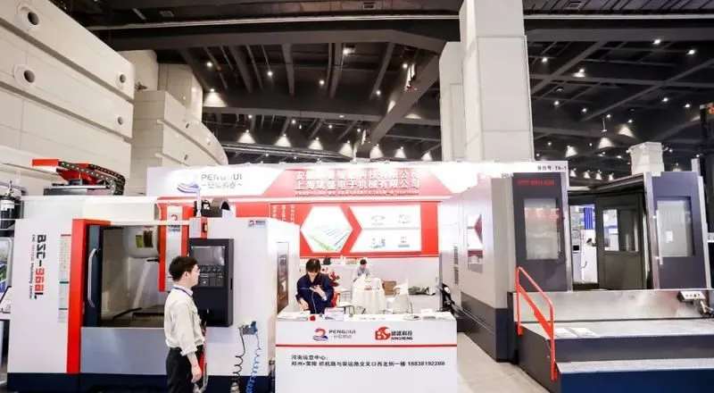
安徽鹏睿智能科技有限公司是一家集研发制造、检验调试、营销服务为一体的大型综合生产基地。公司主营高端数控龙门加工中心、卧式加工中心、立式加工中心三大系列产品。公司具有20余年专业机床生产经验，是中国国内最早的机床制造商之一。自主研发6大系列100多款产品，年产各类机床1000余台。
捷程数控
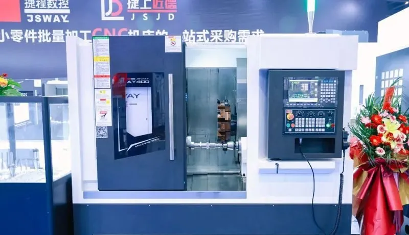
捷程数控从事研发生产国内数控车床、车铣复合加工车床、数控走心机、数控加工中心机床三大类。目标是做国内数控机床综合类生产厂家，产品已大量取代台湾产品同类产品。我司产品对标的是日本西铁城、日本津上、日本大隈、日本马扎克、德玛吉(DNG)等国际大品牌，产品性能越来越接近国际大品牌产品。在研发课题上，中山捷程数控自主承担国内最先进最前沿的机床机械结构与电气同步控制及电脑系统控制相适应等课题。目前是广东省数控车床行业走心机行业的标杆企业。
安徽新诺精工
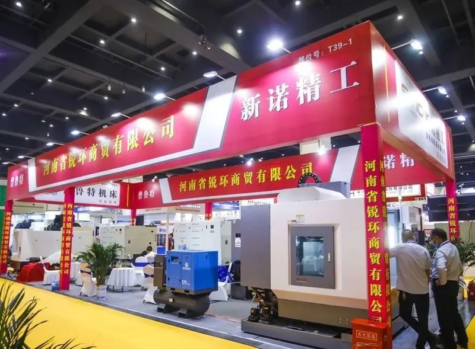
安徽新诺精工股份有限公司是国内领先的切削解决方案提供商，自 1928 年启航从普通铣床行业起步，伴随着全球工业化变革的步伐，发展成为自主研发数控统床、立式加工中心、卧式加工中心、龙门加工中心、数控车床等系列产品的国家高新技术企业。
厦门扬森
厦门扬森数控设备有限公司为一家专业致力于加工中心研发、设计、制造生产、品质管理、销售及服务的高新技术企业。
公司成立伊始，便以台湾机床制造业之技术为基础，聚集志同道合的优秀机床制造业人才，吸收国内外同行的先进技术和优秀理念，以追求完美的性能与品质的新境界，全力投入数控加工中心机的研发与制制造中。
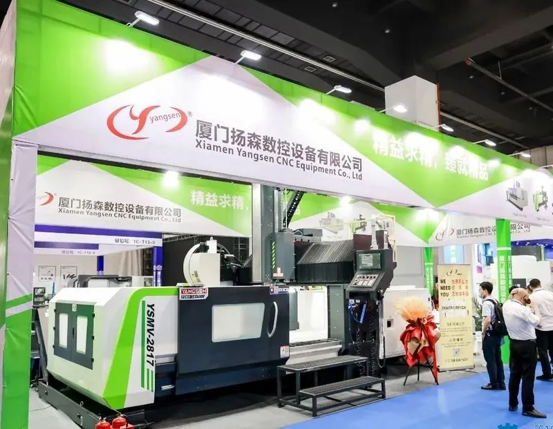
多年的发展，扬森数控已成为今天拥有完善的数控加工中心机生产链及销售服务体系的专业制造商，我们的产品通过IS09001质量管理体系认证和两化融合管理体系认证，并在精密模具制造业、汽摩制造业、电子通讯业、精密零件加工业与航空航天业等领域取得不俗的成绩。主营产品：立式加工中心系列，卧式加工中心系列，高速钻孔攻牙机系列、龙门加工中心系列、高速高精雕铣系列等。
台湾大畏—焦作锐锋机电
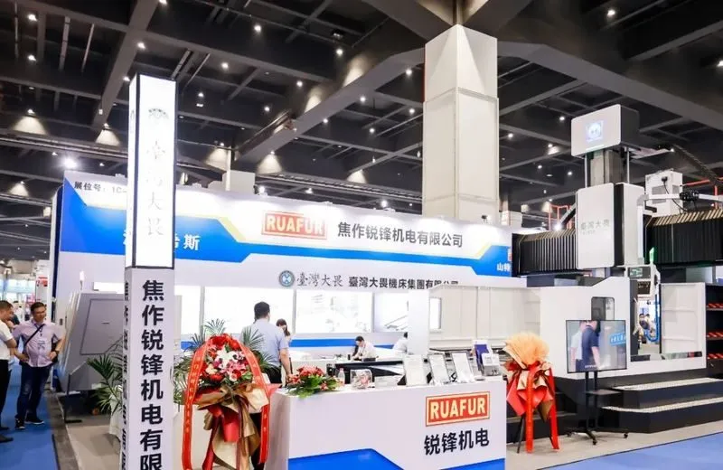
焦作锐锋机电有限公司成立于2021年，注册资金1000万元。公司是世界知名切削刀具品牌Sandvik河南省授权代理商。沈阳希斯工业服务有限公司河南省授权总代理。大畏机床（江苏）有限公司河南省授权代理商、北京北一机床、北一大隈、CB.Ferrari、北二机床河南省授权代理商、通用技术沈阳机床有限公司河南省授权代理商、江苏齐航数控机床有限公司河南省授权代理商、巨冈精工（广东）股份有限公司河南省授权代理商、奥地利魏因加特纳、西班牙尼古拉斯克雷亚等国外知名品牌河南省代理商。公司有维修技术部竭诚为客户提供专业的设备维修、改造、搬迁、大修等服务。主营产品：台湾大畏、沈阳希斯机床、山特维克刀具。
东部数控
台州市东部数控设备有限公司是一家为全球工业提供数控设备的生产型企业。东部数控自2003年创立以来，倾力打造数控机床自主品牌，旗下产品丰富，拥有刀塔式自动车床、矩轨车床、多轴联动车铣复合机床等组成生产线以及为客户提供机床配套的自动化整体解决方案，在广大用户中享有盛誉，并以高品质著称，被评为“中国机械工业名牌产品”,机械类“省级名牌产品”。
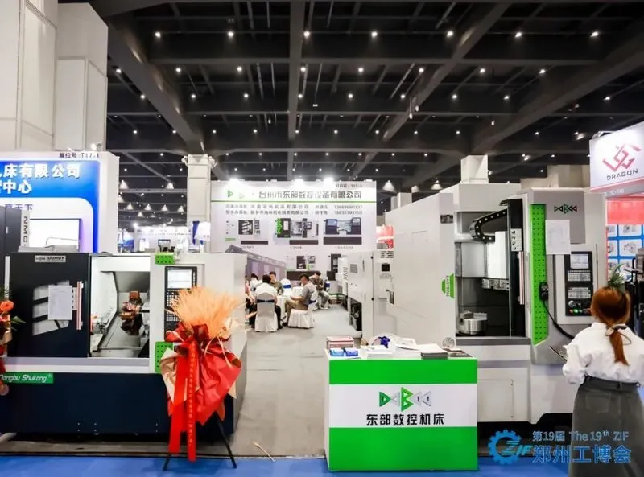
东部数控以精湛的制造技术，优质的品质，完善的售后服务，见证行业口碑，我们有责任让用户选择机床产品时更简单、更快速；在资源不断整合的时代。我们愿携手各地行业人员共同服务客户，提升价值！
南京新浙
南京新浙成立于2007年。坐落于南京市六合区瓜埠数控产业园内，公司主要从事数控机床、智能装备、智能制造系统的研发、生产制造、技术咨询、销售与服务。公司主要产品有立式加工中心、卧式加工中心、龙门加工中心、五轴加工中心、立式车床及各种专用机床、智能制造产线和智能制造车间规划建设等多种类数控产品。公司拥有除南京生产基地外，在重庆和广东均成立了分公司。
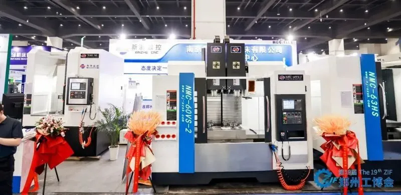
公司坚持以客户为中心，不断创新，从标准立式、卧式、龙门加工中心，逐步研发多款行业高效省人自动化专用机床及生产线，满足客户的加工需求。客户遍布至全国各地，并出口到多个国家。公司自主开发全数控零部件加工专机和自动化生产线，在中钢集团、中国重汽、富华重工等行业领军企业取得重大突破！
新起点新高度，5月9-12日郑州国际会展中心，豫见智造！
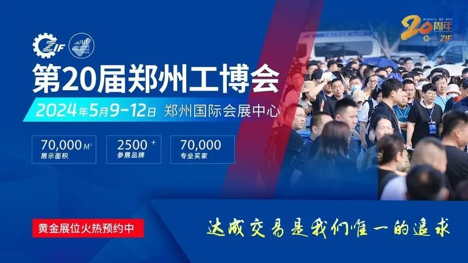